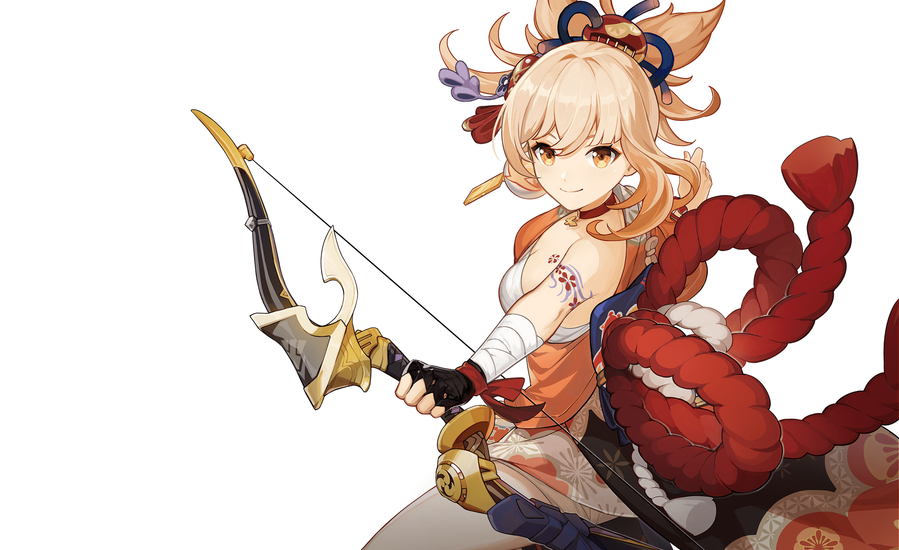
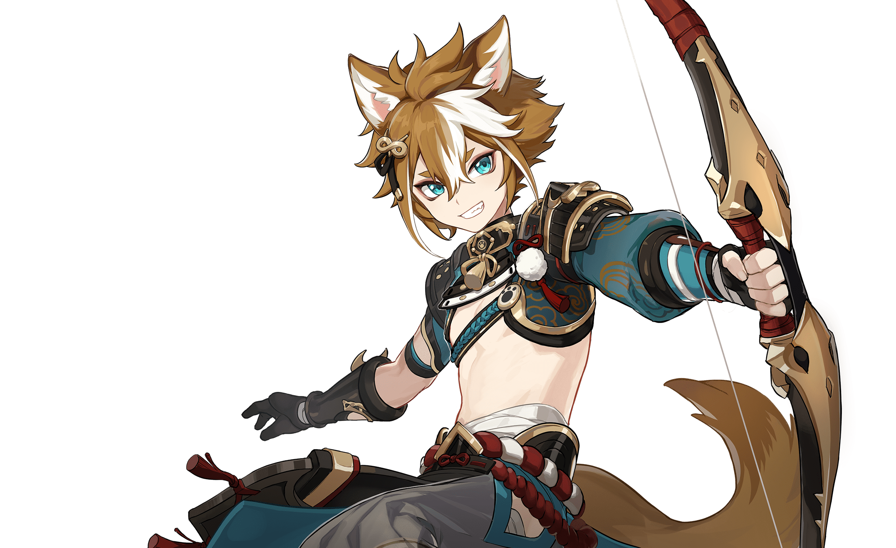

- 


- 

-
稻妻「社奉行」神里家的大小姐。端庄文雅，聪慧坚韧。
待人接物真诚又得体，深受稻妻民众爱戴，贵有「白鹭公主」之名。

稻妻出身的浪人武士。为人谦和，个性温顺。
年轻潇洒的外表下埋藏着许多往事。看似随性，心中却有独属于自己的行事准则。

-
才华横溢的烟花工匠，「长野原烟花店」的现任店主，被誉为「夏祭的女王」。
热情似火的少女。未泯的童心与匠人的执着在她身上交织出了奇妙的焰色反应。


早柚——隶属于秘密组织「终末番」的特别忍者，对睡眠和长高有着异乎常人的追求。
掌握一切可用于逃跑、隐蔽的忍术，以此为自己创造偷懒睡觉的机会。
如此神奇的手段，或许会有意想不到的用途。

-
雷电将军——此世最殊胜威怖的雷霆化身，稻妻幕府的最高主宰。
挟威权之鸣雷，逐永恒之孤道的寂灭者。

天领奉行的将领。行如风，言如誓，是位魄力过人的女性。
她有着「神的笃信者」之名，将全部忠心都奉献给了雷电将军。
将军所追求的「永恒」，也是她愿意为之而战的信念。

心海是海祇岛的「现人神巫女」，也就是现任海祇岛最高领袖。
她通读兵法、擅长谋略，在军事上有着独特见解，也能将内政、外交等工作处理得井井有条。
不过，这位人们眼中深不可测的领导者，似乎也有不为人知的一面…
-
社奉行神里家的家政官，同时也是活跃在稻妻的「地头蛇」。
为人友善又富有亲和力，不论身处何处都能轻易融入人群。
乍看似乎是个非常随性的人，实际上却很有责任感。无论对待工作或人际都有着格外认真的一面。

-
鬼族后裔，性格豪爽热血的快意男儿。
如风一般迅猛，也如雷一般夺目。


海祇军大将。身具领兵者威严的同时，又无高位者的倨傲。
无论何时何地都深受部下信赖，能让人毫无负担地寄托后背与心灵。
-
掌管鸣神大社的大巫女、狐之血脉的延续者、「永恒」的眷属与友人，以及，轻小说出版社「八重堂」的恐怖总编…
有着多重身份的神秘宫司，凡人们或许永远无法了解她的真面目与真心。


社奉行神里家现任家主。总有办法以周全的手段实现自身目的。不过，鲜少有人知道他如今最在意的「目的」是什么。
 神里绫华
神里绫华
 枫原万叶
枫原万叶 宵宫
宵宫- 早柚
 雷电将军
雷电将军 九条裟罗
九条裟罗 珊瑚宫心海
珊瑚宫心海 托马
托马 荒泷一斗
荒泷一斗 五郎
五郎 八重神子
八重神子 神里绫人
神里绫人